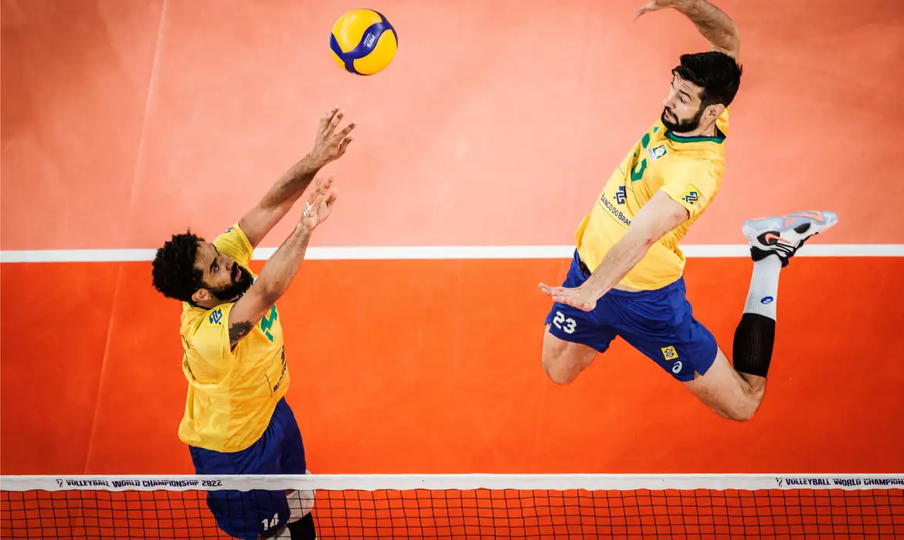
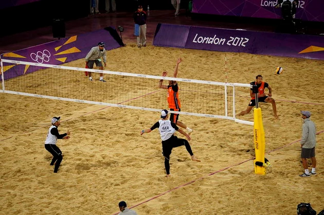

Cada set é terminado quando uma equipe alcança os 25 pontos, tendo 2 pontos de vantagem sobre a equipe adversária. Caso não tenha, o set prossegue até que uma equipe conquiste tal vantagem. Cada time é composto por 6 jogadores em quadra e 6 jogadores reserva. Após o saque, cada time só poderá tocar a bola três vezes, sendo proibido que um jogador toque a bola duas vezes seguidas. A equipe vencedora é aquela que ganhar o maior número de sets.
Quais o objetivo do vôlei?
O objeto usado para a prática de vôlei é uma bola e o objetivo principal do jogo consiste na marcação de pontos ao mandar a bola para o campo adversário e fazer com que ela toque o chão. A instituição responsável pela organização de eventos e da regulação das regras é a FIVB, Fédération Internationale de Volleyball. O objetivo do jogo é fazer com que a bola passe sobre a rede fazendo-a tocar no chão da quadra adversária, evitando que os adversários façam o mesmo.
As principais regras do vôlei
Técnico e Partida
Cada equipe possui um técnico e Uma partida é constituída de 3 a 5 sets;
Pre-Tempo e Ponto
Não existe tempo pré-determinado para cada set e cada set tem um máximo de 25 pontos com uma diferença mínima de 2 pontos;
Empate e ganhar
Em caso de empate no final do set (24 x 24), a partida continua até que a diferença de dois pontos seja atingida (26 x 24, 27 x 25, etc.) e ganha a equipe que vencer três sets;
Quantos jogadores tem o voleibol?
No vôlei de quadra, cada equipe é composta por 12 jogadores. Deste, 6 jogadores são considerados titulares, enquanto os outros 6 são reservas. Além do vôlei de quadra, há também o vôlei de praia. Diferente da quadra, o de praia é jogado na areia e contém somente 4 jogadores, sendo 2 de cada equipe.
